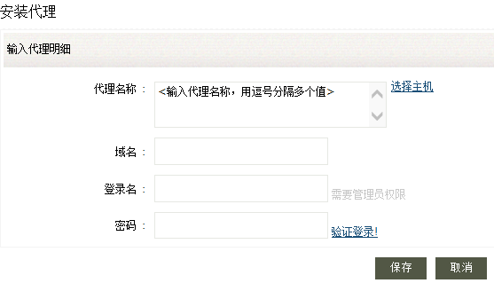
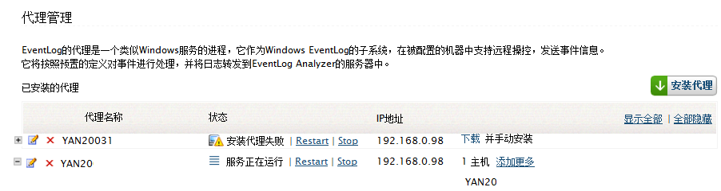

安装代理
EventLog Analyzer提供了用来收集Windows机器事件日志的代理工具。是否使用代理收集Windows事件日志是可选的。
 |
说明：使用代理收集日志是可选的，默认是使用WMI/DCOM的无代理方式收集。 对于那些在安全策略中禁用了WMI/DCOM的公司，可以选择使用代理方式。 |
如何安装Eventlog Analyzer代理？
- 在管理页签下选择> 管理设置中的安装代理，然后点击安装代理链接。
步骤如下：

-
输入要安装代理的机器名称，多个名称使用英文逗号隔开。提示：你可以在一个文本工具中编辑好这些用英文逗号隔开的名称，然后复制到这里。
-
或者，使用选择主机链接来从Windows工作组/域中选择一个或多个主机。
-
域名字段是可选的。用来手动输入机器的域名。如果使用了选择主机，那么这个字段会自动填写。
-
输入可用的用户名和密码来安装代理。该用户应该有安装代理的管理权限。
-
使用验证登陆链接来验证凭证。如果选择了多个主机，确保该凭证多所有主机有效。
-
点击保存按钮来安装代理。
如何编辑、删除、停止和启动代理？
在管理页签下选择> 管理设置中的安装代理，然后点击编辑/删除/停止/开始链接，打开代理管理页面，这里列出了所有安装的代理。

-
点击+和-图标来展开或收起每个代理的主机列表。
-
使用编辑图标来编辑代理。
-
使用删除图标来删除代理。
-
如果代理服务正在运行，点击相应的链接来停止或重启代理。
-
使用“添加更多”链接来添加或删除代理中的主机。添加到代理的主机的日志，将先收集到代理中，然后传送给Evenglog Analyzer主机。安装代理之后，在“添加主机”中可以选择添加的主机是否通过代理来收集日志。
-
如果代理安装失败，出现下载链接用来手动安装代理。下载EventLogAgent.msi到代理主机并手动安装。
代理管理
在代理管理页面，提供了关闭/启动、编辑、删除选项，显示代理的状态和代理的IP地址。
|